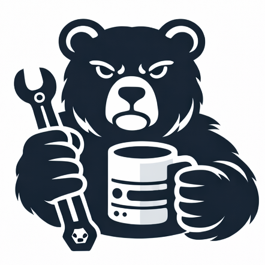

This tab runs in a private session — cookies are completely separate from all other tabs and start empty. No data is shared with the shared session or other tabs.
Advanced cookie groups: Cookie Manager (in development).
—
—
—